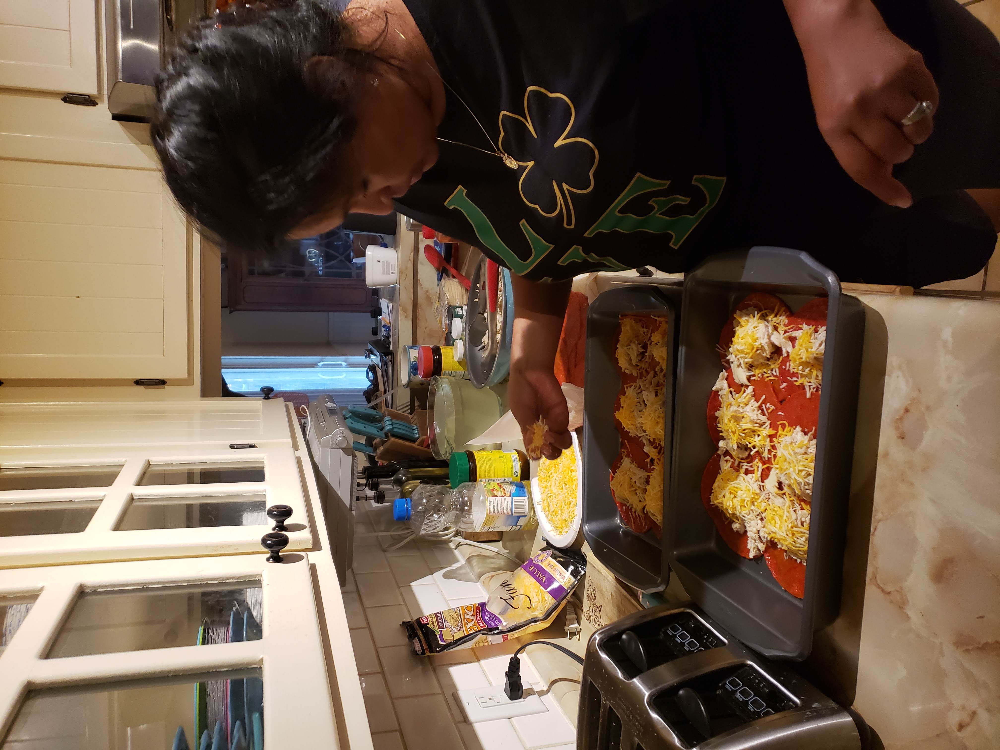
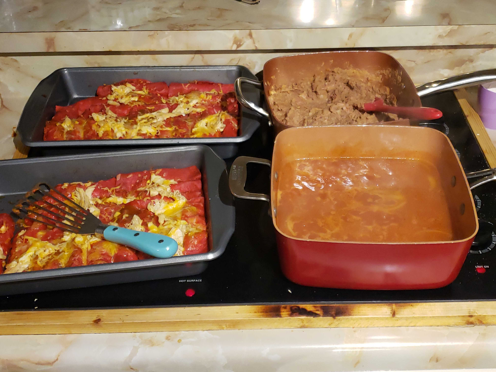

Food is the way we love. It's the way we express our gratitude, our grief, our excitement. Every dish has a purpose and every ingredient has a feeling. With something so special to my culture and to my family it only makes sense to start here. The kitchen is where I made fond memories wether it was taking pride in pouring my own creal and milk or helping my abuelita make tortillas while sneaking pieces of maza to eat. It was where I learned that you could get burned if you're not careful with how you move and where I learned to respect time.
What's interesting, is the way in which these recipes are handed down, interpreted and then actually used. I'll use myself as an example. My abuela makes the mest enchiladas, I mean they are to die for. They have the perfect amount of sauce, meat and cheese and the tortilla is always immaculately intact. The flavor is savory, smokey and cheesy; if that doesn't sell you I don't know what will. The only problem is, no one can make them like her. Any time someone tries to copy her recipee they fail, not badly, but it just can never be imitated. My mother's enchiladas have come a long way from what they once were when I was 12, they are tasty and filling, but not like my abuelas. The reason is, my abuela doesn't measure anything. She eyeballs each and every ingredient, and when you ask her to tell you how much comino she put in the sauce, your likely to get a firey and hostile response. My mother has tried copying her recipe and actually measures each ingredient out so she knows how to make it the next time areound. Me, I use good 'ol Mexican YouTube. That's right, I go on YouTube and type in "Enchiladas Rojas Receta" and poof a dozen or so recipes right at my fingertips.
 I have never told my abuela about my YouTube recipes, mainly because she'd give me a light beating, but I do it for two reasons. The first: it's easy. If I'm going to make enchiladas for dinner with leftover chicken, then I either wait for my abuela or mom to answer the phone (this won't happen for hours) or I can just look it up using good 'ol YouTube. The second: shame. I am very embarrassed that I don't know how to make my abuela's enchiladas. In fact, if I were to be completely honest, if I didn't have the internet I wouldn't know how to cook half of the dishes I do. And while, yes, boomers like to chalk it up to us being lazy, I think it's becuase we're busy. More and more women (who were likely to be the ones cooking) are going and pursuing degrees and careers. Some women find that cooking is an escape from all of that, others (like me) consider cooking more of a chore. But I do it to honor my body and to save money. I hope to be able to use this project as a starting point to start recording my abueala cooking, then study each recipe until I get it right (then she'll never have to know about my guilty YouTube recipes).
If you're like me I'll leave you with a link to one of my favorite YouTube cooking channels here.
In this video I talked to my mother and my tia, both are second generation. I asked them the same exact questions I plan on asking the rest of my family. My goal is to document each persons answer and compile them all into one video to see how these answers change from one generation to the next. I believe that it's not only our recipes that become easier to make and manipulate with each passing generation, but the basic ability to survive and even to thrive gets easier and easier from immigrant through second, third and fourth generations.
I asked basic questions like: What's your name? What year is it? and Where were you born? I also asked questions that would help distinguish each generation from the next. Questions like: Describe your childhood. How old were you when you started working? and Why did you start working? Each question is meant to help highlight the subtle differences in not just circumstance, but the way each generation thinks and how that changes from each generation from immigration on.
Yes, New Years is a widely celebrated holiday. However, I've noticed that the celebrations differ depending on your cultural background. For instance my family enjoys a nice long celebration with many superstitious traditions mixed in. Here are a few: For a year full of good luck you should leave lentils outside your door the the night before. Are you single and looking to mingle? Wear red undies for a chance at a new passionate affair. The power of manifestation comes alive in the tradition of eating grapes. Make 12 wishes then eat 12 grapes (each signifying a wish) within the last minute of the old year. There are plenty more traditions all of which I'll have a list available on soon.
Yes, another well known holiday. But I'd like to share the fondest way I remember celebrating the resurection. Every Easter my abuela, uncles, cousins, and I would make the trip from San Antonio, TX to Piedras Negras in Mexico. Every year we'd celebrate on my aunts ranch. We'd ride horses, go swimming, and light fire works. These moments were so magical to me because I always felt like I was coming home and my heart felt at ease.
On this beautiful day we celebrate not only our mother, but nuestra madre de Guadalupe (The Virgin Guadalupe). While many Americans I know give their mothers gifts like candy and flowers on Mother's Day, we usually kick it up a notch or two. We throw extravagant cook outs with party streamers, catered meals, gifts, alcohol and mariachis.
This celebration was widely popularized first by the sugar skulls everyone started painting themselves in on Halloween, second with tattoos of women dawning the skull makeup, and third with the movie COCO. We celebrate by making alters big and small of different ofrendas (offerings) to those we love who have passed over. Alters can have up to 7 levels on them and are adorned with candles, pictures of those you are honoring, offerings to them (my personal favorite is food because that's what I want to be left with when I go), and marigolds. While the celbration can look somber to outsiders, it's actually a magical time. It's when the vail between the living and the dead is lifted and we can once again celbrate together with all of those we love. I play music and tell stories, I even like watching movies in hopes that I have family watching with me.
I created this project because one of my grandmothers passed away last November and I realized how many stories, recipes, pieces of advice she took with her. I will remember her always but my children will never know who she was and what she was like. There are very few pictures (she hated getting her picture taken) and even less videos. So I thought this would be a wonderful way to get stories, advice, recipes, and get everyone on camera. This way even when my abuela goes or when my mother goes I can have something to show my grandchildren along with my stories, my advice, and my recipes (hopefully I've memorized my YouTube recipes).
I've also seen a lot of millenials and gen z kids (especially children and grandchildren of immigrants) trying to get back to their roots and get connected to their ancestors. I feel like this is a great way to accomplish that. This will be a place we can pass on tradition, we can pass on recipes, we can pass on stories to those we love and even those who need a family and traditions of their own and don't know where to start. I see this project only expanding in the future and I'm very very proud of it.